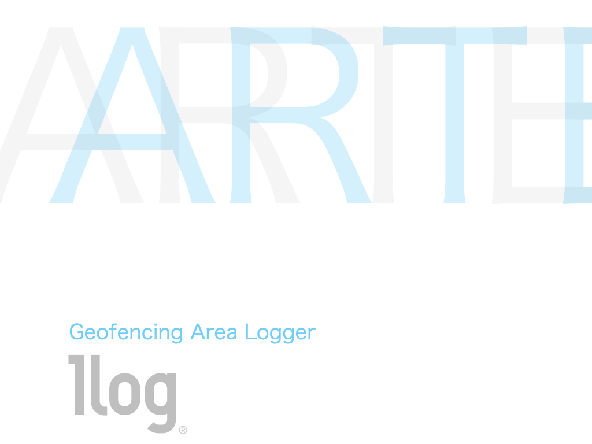
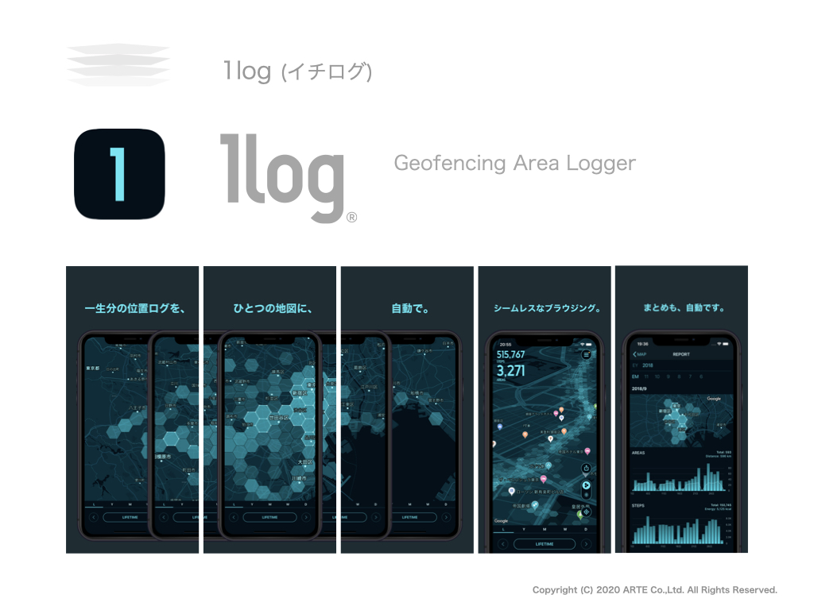

1log
1log とは、利用者の移動エリアを自動記録・可視化する Mobile アプリケーションです。
サービスサイト https://1log.app/

Service contents | Application configuration
位置情報をもとに、移動エリアを可視化します。
サービス機能
Map 移動エリア マップを表示
Report 移動エリア レポートを表示
Data backup 自動バックアップ、バックアップデータからの復旧
import/export 移動と歩数をインポート、エクスポート
動作環境
OS iOS 11.x 以上
対応機種 iPhone SE 以上
使用許諾 位置情報
提供方法
Apple App Store

*SAI（Mobile ソリューションプロダクト）の技術を用いています。